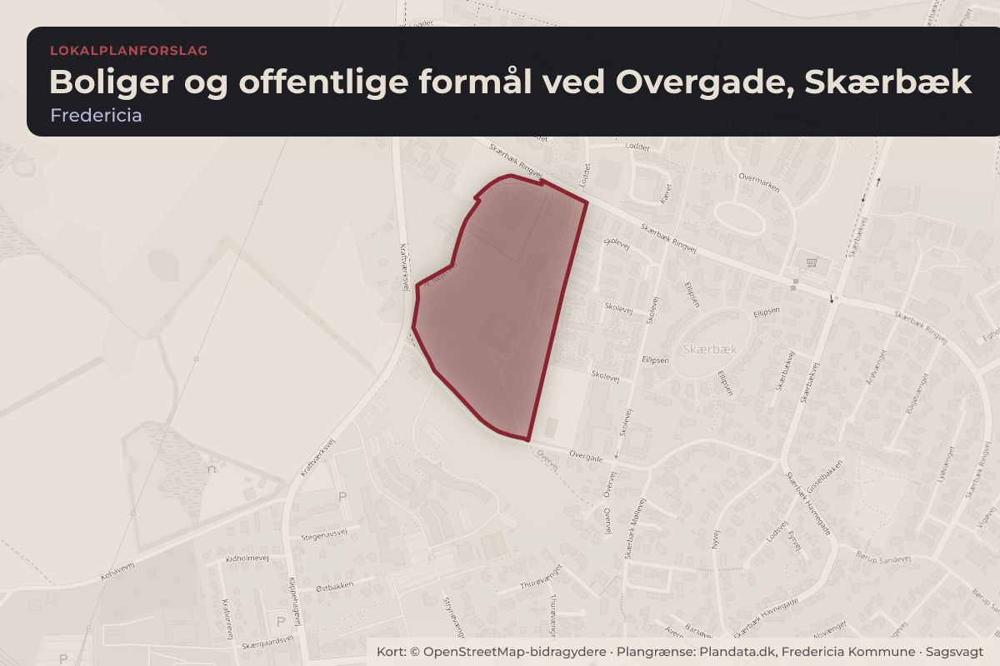
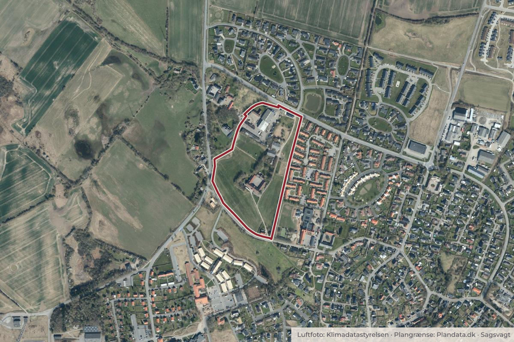

Besluttet 31. august, Økonomi- og Erhvervsudvalget, Fredericia
Forslag til lokalplan 402 - Boliger og offentlige formål ved Overgade, Skærbæk
Forvaltningen har udarbejdet et forslag til Lokalplan 402 - Boliger og offentlige formål ved Overgade, Skærbæk med det formål at muliggøre udvikling af et attraktivt og varieret boligområde centralt i Skærbæk.
Bydele i sagen: Skærbæk
Steder i sagen: Overgade

Kort: © OpenStreetMap-bidragydere. Plangrænse: Plandata.dk, Fredericia Kommune.

Kort fortalt
- Hvem
- Økonomi- og Erhvervsudvalget, Fredericia Kommune
- Hvornår
- Mandag 31. august 2026
- Status
- Besluttet. 1. -3. Anbefales.
Læs hele sagen Kommunens egen tekst
Sagsfremstilling
Baggrunden for lokalplanen er kommunens ønske om at understøtte en positiv udvikling for
Skærbæk by, hvor byudviklingen skal være med til at understøtte et varieret bymiljø med
nærhed til grønne arealer og offentlige områder.
Oversigtskort, der viser lokalplanens afgrænsning.
Planlægningen blev igangsat af Teknisk Udvalg d. 19. september 2024. I løbet af
planprocessen er lokalplanområdet blevet udvidet, da to grundejere ønsker at frasælge deres
grund, der støder op til det oprindelige lokalplanområde.
Lokalplanforslaget blev godkendt på et møde i Teknisk Udvalg d. 27. oktober 2025, men på det
efterfølgende møde i Økonomi- og Erhvervsudvalget d. 10. november blev det besluttet at
tilbagesende forslaget til fornyet behandling. På baggrund heraf har forvaltningen ændret
bebyggelsestypologien i Delområde 1 og 2 fra rækkehuse til gårdhavehuse. Ændringen har
medført en reduktion i antallet af boliger i Delområde 1 og 2 fra omkring 50 boliger til omkring
32 boliger.
Formålet med lokalplanen er at muliggøre indpasning af nye, attraktive boliger i et eksisterende
landsbymiljø i Skærbæk. Herudover skal lokalplanen muliggøre, at en eksisterende gård kan
anvendes til offentlige formål, og at der udlægges et grønt område nær skolen. Kommunen har
interesse i at kunne lave en sammenhængende planlægning for området, hvor trafik, regnvand
m.v. kan løses som en helhed. Planlægningen skal sikre, at området udvikles efter
principperne fra Helhedsplan for Skærbæk, hvor der er et særligt fokus på at bibeholde byens
væsentlige karaktertræk og videreudvikle det fysiske miljø med respekt for de eksisterende
kvaliteter. Lokalplanen skal sikre, at bebyggelsen bliver sammensat, afvekslende og holdes i
en mindre skala, der ikke virker dominerende i forhold til omgivelserne, herunder i relationen til
landskabet og den eksisterende by.
Lokalplanens indhold
For at bidrage til en sammensat bystruktur, som er tilpasset den eksisterende bys skala, er
lokalplanområdet inddelt i delområder med forskellige specifikke anvendelser og struktur:
Delområde 1: Mod nordvest udlægges et område til gårdhavehuse med op til 14 boliger
Delområde 2: Mod nordøst udlægges et område til gårdhavehuse med op til 18 boliger.
Delområde 3: Centralt i området ligger den firlængede gård, Juulsminde, som kan
anvendes til offentlige formål eller liberale erhverv. Omkring gården udlægges parkering
samt et grønt område, der støder op til skolens område.
Delområde 4: Mod syd kan der udstykkes en enkelt grund til parcelhus ved siden af en
eksisterende villa.
Delområde 5: Areal mod vest, der udlægges som et offentligt grønt område.
Delområde 6: Mod vest udlægges et område til fritliggende enfamiliehuse med op til 11
boliger.
Illustrationsplan der viser, hvordan området kan indrettes. En illustrationsplan er ikke bindende.
Lokalplanen har til hensigt at sikre en tilpasning af bebyggelsen til det omgivende landskab og
til det eksisterende landsbymiljø. Derfor indeholder lokalplanen bestemmelser, der skal sikre at
ny bebyggelse bliver i en skala og med proportioner, der ikke virker dominerende i forhold til
eksisterende bebyggelse og terrænet. Den firlængede gård skal fortsat fremstå som områdets
mest iøjnefaldende byggeri. Derfor indeholder lokalplanen bestemmelser, der begrænser
facadehøjde og tagformer for ny bebyggelse.
Forhold til Kommuneplan 2025 – 2037
Lokalplanforslaget ligger i rammeområde S.BE.2 Kraftværksvej. Kommuneplanrammen
fastlægger anvendelsen til blandet bolig og erhverv, herunder åben-lav boligbebyggelse, tætlav boligbebyggelse, erhvervsområde, kontor- og serviceerhverv, butikker og område til
offentlige formål. Det samlede rammeområde udgør ca. 19 ha.
Kommuneplanrammen angiver, at landskabet, bevaringsværdig beplantning og ny beplantning,
sammen med den eksisterende gård, skal være karaktergivende elementer i en samlet plan for
området.
Lokalplanen er i overensstemmelse med kommuneplanen.
Miljøvurdering
Det er ved en screening af planen vurderet, at planens påvirkning af miljøet ikke har en
karakter og et omfang, der kræver, at der gennemføres en miljøvurdering. Afgørelsen om ikke
at udarbejde en miljørapport har været sendt i høring hos berørte myndigheder og
offentliggøres sammen med planforslaget.
Økonomiske konsekvenser
Hvis det er nødvendigt for at gennemføre lokalplanen, og de rette betingelser er opfyldt, kan
byrådet, inden for 5 år efter, at lokalplanen er offentligt bekendtgjort, beslutte at ekspropriere
privates ejendomme eller rettigheder over ejendomme jævnfør Planlovens § 47.
Vurdering
Forvaltningen vurderer, at der med Lokalplan 402 - Boliger og offentlige formål ved Overgade,
Skærbæk skabes det nødvendige plangrundlag, som sikrer områdets fremtidige anvendelse til
fritliggende enfamiliehuse, gårdhavehuse og offentlige formål.
Forvaltningen vurderer, at lokalplanen følger principperne fra Helhedsplan for Skærbæk 2024 i
forhold til bosætning, natur, byfortætning, hensyntagen til eksisterende kvaliteter samt
muligheden for at indpasse offentlige funktioner. Udover den involvering af borgerne, der har
været i forbindelse med helhedsplanen, bør der afholdes borgermøde som en del af den
offentlige høring af lokalplanen.
Forvaltningen vurderer, at lokalplanen ikke ændrer væsentligt i anvendelsen af området i
forhold til gældende planlægning, hvorfor en frist på 4 uger til offentlig høring er passende og
tillader rimelig tid til at informere offentligheden og til, at offentligheden kan forberede sig på og
opnå reel deltagelse i processen.
Indstilling
Forvaltningen indstiller til Teknik- og Miljøudvalget at anbefale Økonomi- og
Erhvervsudvalget at anbefale byrådet, at:
1. Forslag til Lokalplan Lokalplan 402 - Boliger og offentlige formål ved Overgade,
Skærbæk vedtages som forslag, og
2. Lokalplanforslaget sendes i offentlig høring i 4 uger, og
3. Der afholdes borgermøde under den offentlige høring.
Sagens forløb
17/08/2026 Teknik- og Miljøudvalget 2026 - 2029
1. -3. Anbefales af et flertal bestående af Socialdemokratiet, Venstre, Enhedslisten, Liberal
Alliance og Danmarksdemokraterne.
Det Konservative Folkeparti stemmer imod, da anvendelsen af den eksisterende ejendom
ønskes ændret fra offentlig formål til åben lav byggeri.
Beslutning
1. -3. Anbefales.
Kilde: Fredericia Kommune, Økonomi- og Erhvervsudvalget, referat fra mødet mandag 31. august 2026, punkt 8. Læs den originale sag hos kommunen.